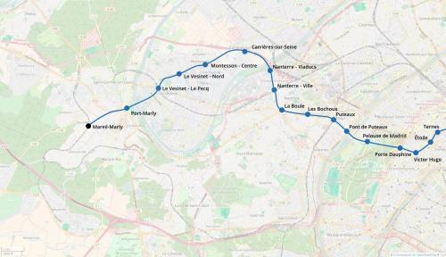

M2 Ouest - Mareil-Marly
M2 Ouest - Mareil-Marly
Porte Dauphine - Mareil-Marly
Une extension de la ligne 2 du métro.
Le prolongement à l'ouest de la ligne 2 est un projet proposé par le Plan Ile-de-France pour améliorer la desserte de la faculté Dauphine, de Puteaux et de Nanterre.
En passant par le sud de la Défense, la ligne 2 devrait contribuer à soulager le metro 1 entre Étoile et la Défense ainsi que le RER A entre Étoile et Rueil-Malmaison.
À l'ouest de Nanterre, la ligne 2 sera un moyen pour les habitants de la rive droite de la Seine de rejoindre la Défense sans emprunter le RER A.
Enfin dernier aspect, ce prolongement permettra de doter la ligne 2 de nouveaux ateliers d'entretien à l'ouest et d'un nouveau terminus mieux configuré que la boucle actuelle très serrée de la porte Dauphine. Cela permettra d'augmenter la fréquence des trains sur la ligne et de résorber plus facilement les conséquences d'un incident en ligne.
Voir les autres projets associés à cette ligne
Carte
{kind=link}

Cliquer pour agrandir
Si ce projet vous intéresse n'hésitez pas à le (re-)partagez sur les réseaux sociaux ou par courriel ou à en parler autour de vous.
Si vous souhaitez travailler à la concrétisation de ce projet, passez à l'action et contactez nous.
Commenter